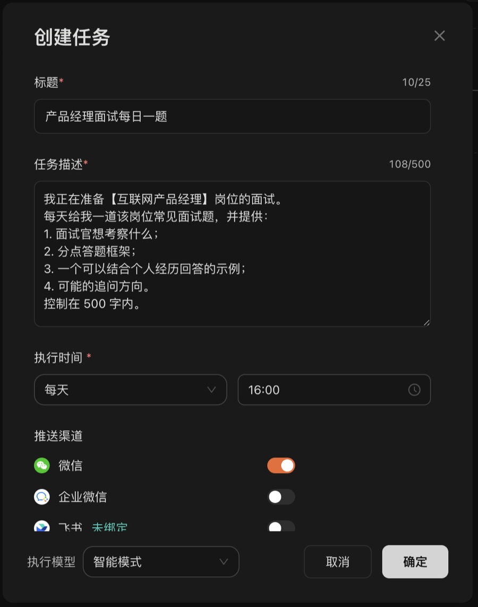
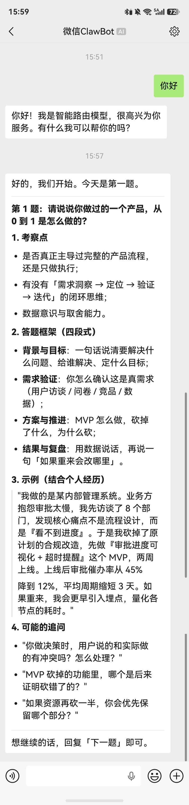

定时任务 · 秋招求职
每天 10 分钟
一道面试题
推到微信
考察点、答题框架、示例、追问方向，
一次给齐。30 天攒下 30 道。
Lucimix
秋招产品岗：每天下午 4 点，一道面试题连答题框架推到微信
准备面试最大的问题不是不会，是拖。总想着「等有空了集中刷题」，结果拖到面试前两天才开始临时抱佛脚。
我的解决办法是把它拆成每天一个小任务：每天下午 4 点，一道目标岗位的面试题自动发到微信。通勤路上、午休时间，10 分钟就能过一道。
设置方法
在「定时任务」里创建一个任务，时间选每天 16:00，推送到微信，任务描述填下面这段：
可复制任务描述我正在准备【互联网产品经理】岗位的面试。
每天给我一道该岗位常见面试题，并提供：
1. 面试官想考察什么；
2. 分点答题框架；
3. 一个可以结合个人经历回答的示例；
4. 可能的追问方向。
控制在 500 字内。

收到的题长这样
第一天收到的是一道经典题：「请说说你做过的一个产品，从 0 到 1 是怎么做的？」
它不只给答案，而是按四部分拆开：
- 考察点：是不是真正主导过完整流程，有没有「需求洞察 → 定位 → 验证 → 迭代」的闭环思维。
- 答题框架：背景与目标、需求验证、方案与推进、结果与复盘。
- 示例：一段可以套用自己经历的完整回答。
- 可能的追问：比如「MVP 砍掉的功能里，哪个后来证明砍错了？」

看完一题还想继续，在微信里回复「下一题」就行。
为什么这个方法有用
- 不用自己想起来：题目会自己找上门。
- 量小不累：一天一道，很难找借口拖。
- 越积越多：一个月就是 30 道带框架的题，面试前翻一遍就是自己的题库。
把「准备面试」从一件大事，变成每天 10 分钟的小事。